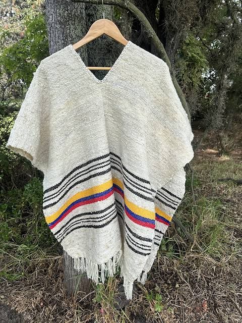
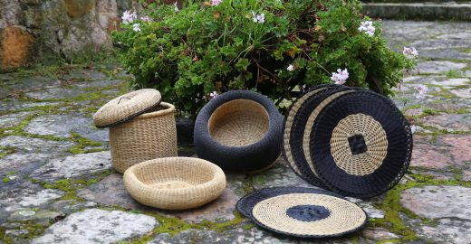
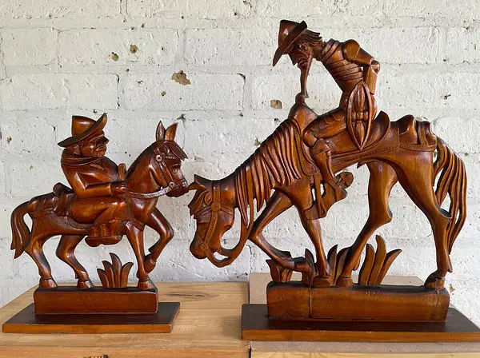

Tejidos en Lana de Oveja
Confección de ruanas, cobijas y sacos hilados a mano en telares de pedal con lana 100% natural.
Conoce el trabajo de los artesanos locales en lana, tejido y cestería que preservan el saber ancestral.

Confección de ruanas, cobijas y sacos hilados a mano en telares de pedal con lana 100% natural.

Elaboración de canastos, esteras y utensilios para el hogar empleando fibras vegetales procesadas a mano.

Figuras representativas de la vida rural y utensilios de cocina tallados por carpinteros autóctonos.